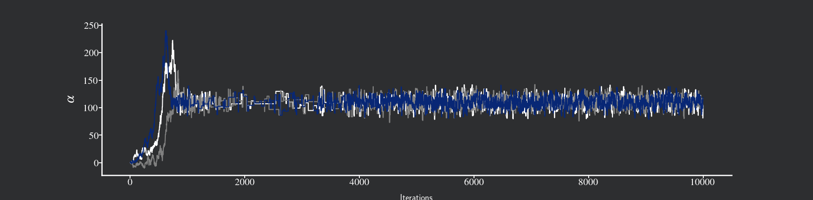

Home
About me

I am a Phd candidate in Economics at University of São Paulo. In my thesis I study applications of Bayesian Econometrics in Macroeconomics and Finance. I also have a master degree in Economics from the Federal University of Santa Catarina .
My research interests are in:
- Macroeconomics
- Finance
- Bayesian Econometrics
Specifically, I am interested in empirical macroeconomics, forecast of macroeconomic and financial variables, as well as the linkage between these two sort of variables.
You can contact me at my e-mail: aalves.cassio@gmail.com